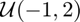
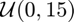

Bus schedule
Suppose that a bus is scheduled to arrive at the stop on the hour, at 15 minutes past the hour, at 30 minutes past the hour, and at 45 minutes past the hour. However, due to random fluctuations, it arrives anywhere between 1 minute early and 2 minutes late with uniform distribution (  ). Assume that the arrivals of different buses are independent and identically distributed (IID).
Contents
Parameters
t_int = 15; % time interval between stops dlo = -1; % low end of delay dhi = 2; % high end of delay rep = 1e6; % number of repetitions atol = 1/60; % absolute tolerance rtol = 0; % relative tolerance mu = 7.55; % true mean wait time
Mean estimation
The Monte-Carlo simulation will assume people arrive at the bus stop randomly, one person every time a bus arrives (  ). Passengers will enter the first bus that arrives. There is no problem of space inside the bus. Furthermore, we will use the inherent symmetry of the problem to rule out one of the posibilities: the passenger arrives after the first bus has already passed. Time is centered on the passenger.
Monte Carlo methods are very versatile. In this case, we present two possibilities to estimate the mean waiting time for a bus. The first one is defined by the number of runs performed while the second one is constrained by the maximum error allowed (99% of the time). The meanMC_CLT() function is part of the GAIL package.
span_d = dhi - dlo;
tic;
x = rand(rep, 3);
waitt = f(x, t_int, span_d, dhi, dlo); % function definition at the end
muhat_n = mean(waitt);
toc;
tic;
y = @(n)f(rand(n, 3), t_int, span_d, dhi, dlo);
[muhat_clt, out] = meanMC_CLT(y, atol, rtol);
toc;
err = abs(muhat_clt-mu);
Confidence interval estimation
Since an estimated quantity is unlikely to be exact, sometimes is more useful to compute a range of values within the true answer lies with some probability. That is called a confidence interval. In this example, a confidence interval for the probability that the time to wait of a bus is greater than 8 minutes will be constructed.
The function binomialCI is implemented in the main directory.
tic; y = f(rand(rep, 3), t_int, span_d, dhi, dlo); ci = binomialCI(rep, sum(y > 8)); toc;
Elapsed time is 0.618662 seconds.
Output results
disp(['The true mean is ' num2str(mu)]) disp(' ') disp(['Estimated mean with ' num2str(rep) ' runs: ' num2str(muhat_n)]) disp(' ') disp(['The error is ' num2str(err, '%e')]) disp(['It should be bounded by ' num2str(out.errBd, '%e')]) disp([num2str(out.nSample) ' samples used']) disp(['Therefore, the estimated mean is ' num2str(muhat_clt)]) disp(' ') disp('The probability lies within') disp(ci)
The true mean is 7.55
Estimated mean with 1000000 runs: 7.5482
The error is 2.162902e-04
It should be bounded by 1.666667e-02
663329 samples used
Therefore, the estimated mean is 7.5502
The probability lies within
0.4654 0.4680
Function
function [y] = f(x, t_int, span_d, dhi, dlo) % function for waiting time (y) x_p = x(:, 1) * t_int; x_2 = x(:, 2) * span_d + t_int + dlo - dhi; x_3 = x(:, 3) * span_d + 2*t_int + dlo - dhi; y = (x_2 - x_p).*(x_2 >= x_p) + (x_3 - x_p).*(x_2 < x_p); end
Elapsed time is 0.458420 seconds. Elapsed time is 0.268297 seconds.
Author: Alejandro Madriñán Fernández